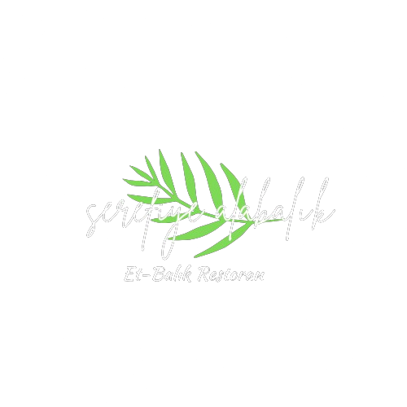

Kuruluşumuz
Sakarya'nın doğal güzellikleri arasında, Şerefiye Mahallesi'nde 1989 yılında köklü bir geçmişe sahip alabalık tesisimiz, kaliteli ve taze ürünleri ile damaklarda unutulmaz lezzetler bırakmaktadır.
Misafirperverliğimiz, kalitemiz ve güler yüzlü ekibimizle, her geçen gün daha fazla insanın tercihi olmaya devam ediyoruz. Sizleri, doğadan sofranıza uzanan lezzet yolculuğumuza davet ediyor, bize duyduğunuz güven için teşekkür ediyoruz.
1989 yılında, Şerefiye Mahallesi'nde Öztürk Ailesi'nin alabalık tutkusundan doğan bir hikaye başladı. Dedelerimizin balık tutma sevdasıyla filizlenen bu serüven, zaman içinde unutulmaz bir öyküye dönüştü ve bugün Şerefiye Alabalık Restoranı olarak sizlerle buluşuyor.
Balıkçılıkla geçen yılların ardından aile, sadece bir çiftlikten öteye geçmeye karar verdi ve 1989'da restoranlarını kapılarını açtı. Şimdi, burada sizlere huzur dolu bir atmosferde, doğanın güzellikleriyle çevrili bir ortamda enfes alabalıklar sunuyoruz. Her bir lezzet, geçmişin izlerini taşıyan bir hikayenin parçasıdır ve sizlere aile sıcaklığı ile samimiyeti özenle sunmak için seçilmiştir. Şerefiye Alabalık Restoranı, bu eşsiz serüveni paylaşmak için kapılarınızı aralıyor ve sizi doğal bir lezzet yolculuğuna davet ediyor.
Misafirperverliğimiz, kalitemiz ve güler yüzlü ekibimizle, her geçen gün daha fazla insanın tercihi olmaya devam ediyoruz. Sizleri, doğadan sofranıza uzanan lezzet yolculuğumuza davet ediyor, bize duyduğunuz güven için teşekkür ediyoruz.
1989 yılında, Şerefiye Mahallesi'nde Öztürk Ailesi'nin alabalık tutkusundan doğan bir hikaye başladı. Dedelerimizin balık tutma sevdasıyla filizlenen bu serüven, zaman içinde unutulmaz bir öyküye dönüştü ve bugün Şerefiye Alabalık Restoranı olarak sizlerle buluşuyor.
Balıkçılıkla geçen yılların ardından aile, sadece bir çiftlikten öteye geçmeye karar verdi ve 1989'da restoranlarını kapılarını açtı. Şimdi, burada sizlere huzur dolu bir atmosferde, doğanın güzellikleriyle çevrili bir ortamda enfes alabalıklar sunuyoruz. Her bir lezzet, geçmişin izlerini taşıyan bir hikayenin parçasıdır ve sizlere aile sıcaklığı ile samimiyeti özenle sunmak için seçilmiştir. Şerefiye Alabalık Restoranı, bu eşsiz serüveni paylaşmak için kapılarınızı aralıyor ve sizi doğal bir lezzet yolculuğuna davet ediyor.